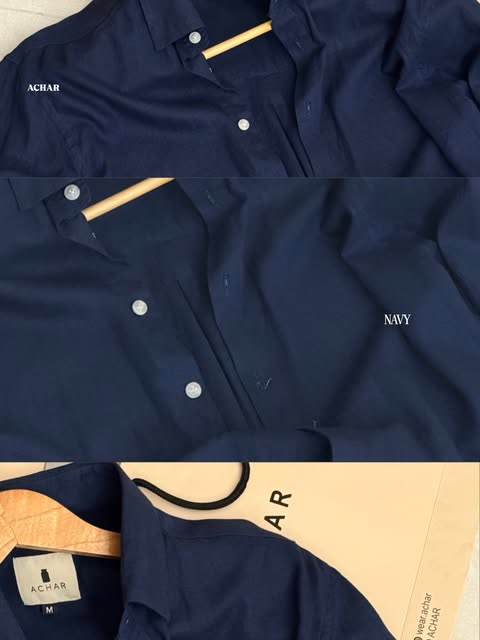
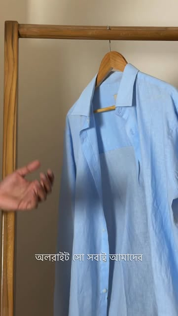
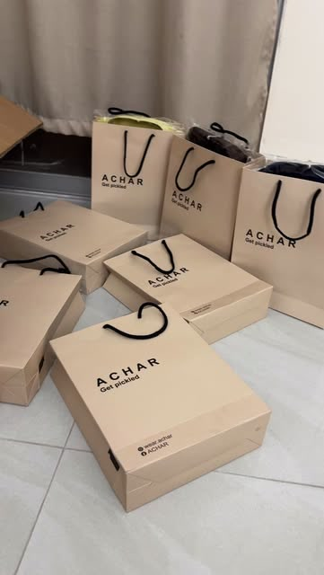

The Recipe
An acquired taste. A considered fit.
আচার means pickle. A good one needs the right ingredients, a little patience, and a jar you're proud to open.
We started ACHAR with one rule: make fewer things, and make them properly. Recipe 01 is the first: a boxy linen shirt, cut wide through the body, dropped at the shoulder, washed once so it arrives soft.
It comes in five colours. Each one is a mood you can wear: quiet Oatmeal, loud Lime, after-six Navy, cool Powder Blue, dark Brown. Recipe 02 is still in the jar.
Shop Recipe 01Three ingredients
Breathable, slubby, made for Dhaka summers and softer every wash. (Sample spec: 100% linen.)
Boxy through the body, dropped at the shoulder, curved at the hem. Tucked or out.
Washed once before it ships, then folded into kraft and sealed with the jar tag.
What's in the jar
Details from ACHAR's own photographs



Get pickled
Every order leaves in a kraft box with the jar tag on it. Inside Dhaka in 1–2 days, across Bangladesh in 3–5. Pay the rider, or pay online through SSLCOMMERZ.
Delivery times are samples for the pitch.
Delivery & payments